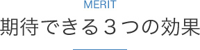
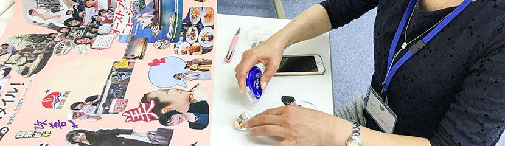
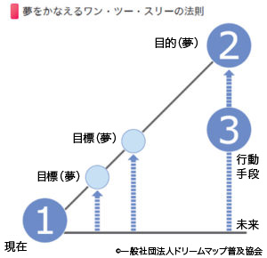
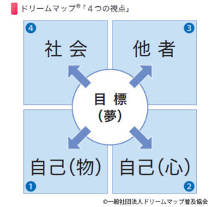
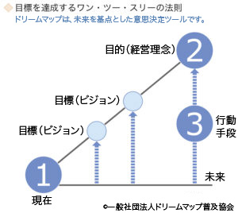
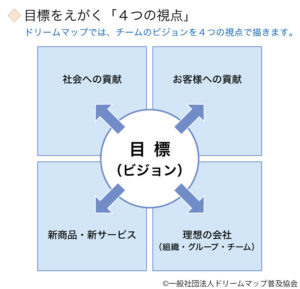

- HOME
- ドリームマップ
ドリームマップとは、自ら考え、自ら動き、自ら結果を出そうとする心のスイッチをオンにする目標達成ツールです。
設定した目標を具体的な数字や言葉、画像を使い、台紙の上にビジュアル化して表現します。
作成したドリームマップは研修後も確認し続けることによって、自律的・継続的に成果や付加価値を生み出すエネルギーを持続させます。


01.ナレッジやスキルの吸収力が向上する
ドリームマップはパソコンで言えばOS の役割を担います。ＯＳ（心のスイッチ）がオンになっていないと、幾多のナレッジやスキルもインストールしにくいという現状があります。ナレッジやスキルトレーニングの前にドリームマップを創ることにより、ナレッジやスキルトレーニングの吸収力が格段に向上します。
02.退職を思い留まらせる
ドリームマップは、目の前に立ちはだかる幾多の困難を乗り越えることが、自らの成長にもなり、自らの将来的な夢（目標）の実現に繋がることを教える目標達成ツールです。
問題や課題など、困難を避けたいが故に退職を考えていた社員の気持ちを切り変える効果があります。夢をもつと課題が発生します。課題の克服が夢の実現であることがわかると、夢を諦めないようになります。
03.社員が活性化し、組織が元気になる
ドリームマップによって、会社が掲げる夢（目標）や理想像（ビジョン）と社員個々人のやり甲斐や夢、成長したい方向との向き（ベクトル）を合わせることができます。よって、本来社員個々人の内面にある「意欲（モチベーション）」を高め「可能性（ポテンシャル）」を引き出すことが出来るのです。
一般向けドリームマップ概要図


チームドリームマップ（企業向け）概要図


ドリームマップ研修は、目標達成をサポートするコミュニケーションスキル「コーチング」、
脳の取扱説明書と言われる「NLP（Neuro Linguistic Programming 神経言語プログラミング）」
等の心理学を用いてデザインされています。
ドリームマップを使った当社サービス


〒577-0808
大阪府東大阪市横沼町2-9-4
TEL 090-4765-9937
受付時間 9:00-18:00（土日祝休）